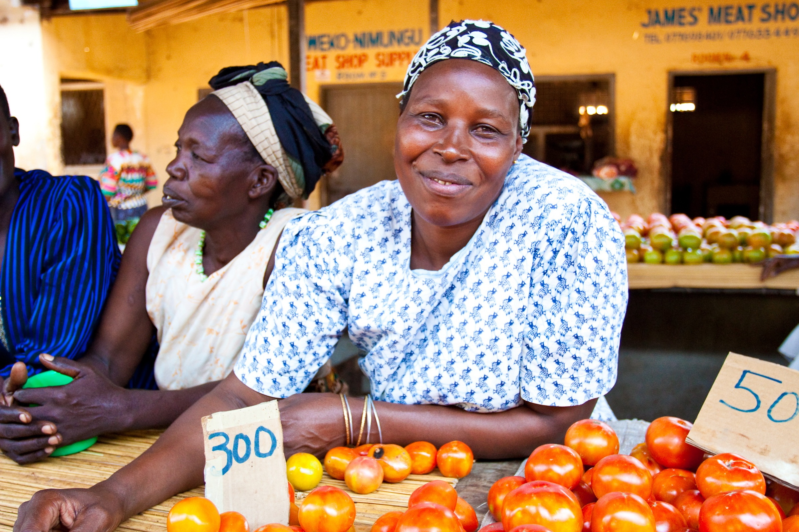
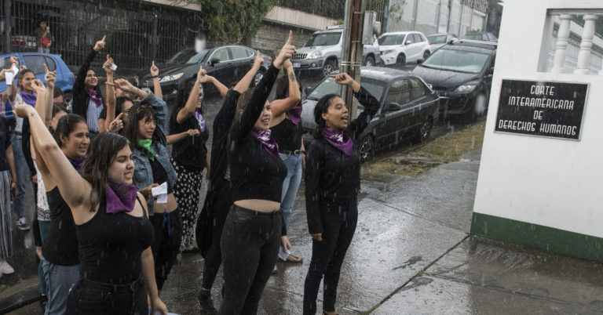
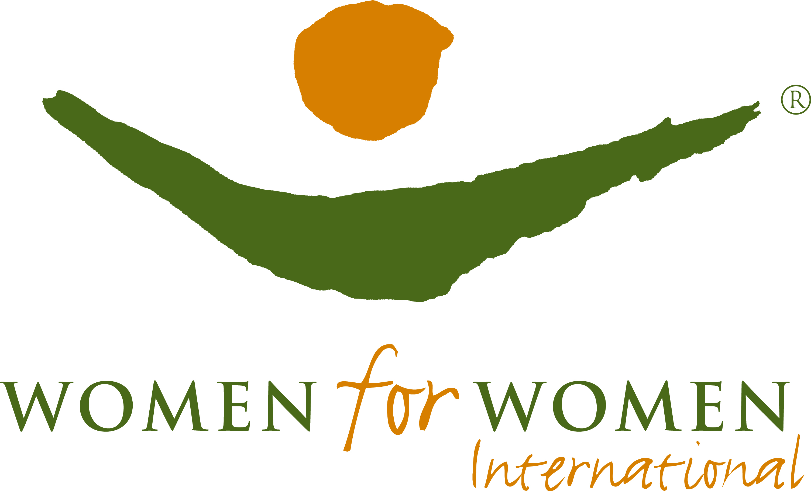

Organizations supporting women and promoting equality and fairness in wages, in behavior, and with opportunities have spent years putting women's rights at the forefront of their missions. In honor of International Women's Day, held annually on March 8, we've compiled a list of organizations that are fueling this societal change for the better.
1. WOMEN'S GLOBAL EMPOWERMENT FUND.
Since 2007, this advocacy group has been empowering under-privileged women in Uganda by offering business training and access to microloans to help facilitate their professional independence. The group's contributions have emboldened Ugandans, with five women affiliated with WGEF's programs running for—and winning—political office in 2016.
2. CENTER FOR REPRODUCTIVE RIGHTS
Supporting a woman's right to make decisions about her own body is the focus of this legal consortium, which has had impact on local and international laws. They've had influence over reproductive health policies in Asia, Africa, and the U.S., and helped shed light on an oppressive abortion ban in El Salvador that's led to women being jailed for stillbirths. Their efforts on behalf of "Las 17," 17 Salvadoran women accused of having abortions, has seen several women released from prison; the efforts are ongoing.
3. WOMEN FOR WOMEN INTERNATIONAL
This nonprofit seeks to support women displaced or marginalized by conflict and oppression in eight foreign territories including Iraq and Rwanda. Many of their efforts are education-based, facilitating classes and finding opportunities for graduates. Currently, the group is offering psychosocial and educational resources to Syrian women in the Kurdistan region of Iraq, with a goal of reaching over 3000 women in the next three years.